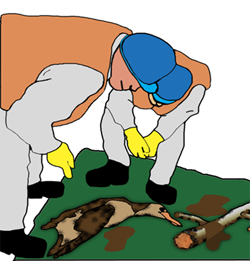

FASE 1 - OPPRYDDING
Start saneringsarbeidet med å fjerne all forurenset masse slik som drivgods, tang, tare, død sjøfugl osv.
Dette samles opp i sekker eller annet passende lagringsmedium, og leveres til nærmeste mellomlagringsdepot.
Finner man levende, men oljeskadet sjøfugl og/eller dyr, skal aksjonsledelse og fylkesmannens miljøvernavdeling underrettes om dette.
Direktoratet for Naturforvaltning og Mattilsynet har forvaltningsmyndighet i forurensningssituasjoner som rammer dyreliv. Enhver som påtreffer åpenbart skadd vilt skal så langt det er mulig hjelpe dyret.
Denne hjelpeplikten er begrenset til den hjelp hver enkelt har kompetanse til å gi. Dersom vedkommende ikke er i stand til å gi nødvendig hjelp skal vedkommende melde fra til politiet, Mattilsynet, veterinær eller skadestedsleder.
Omfanget av forurensningssituasjonen vil være avgjørende for hvordan man skal håndtere situasjonen med hensyn til oljeskadet vilt.
Skadestedsleder bør være informert om hvordan levende og dødt oljeskadet vilt skal håndteres.
Vis alltid respekt for dyrelivet!
Hendene er vårt beste arbeidsredskap, men husk at oljebestandige hansker SKAL benyttes, oljen kan gi utslett og allergiske reaksjoner.